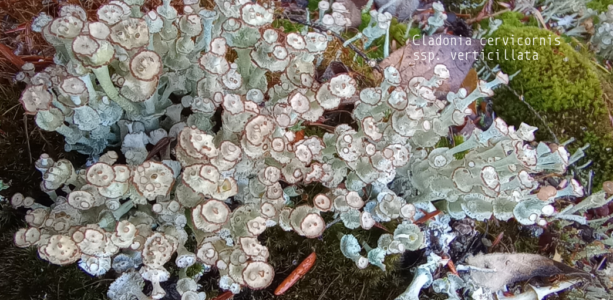
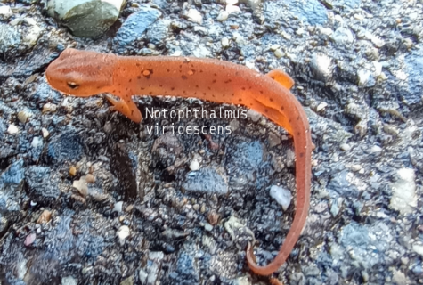

-

Cladonia cervicornis ssp. verticillata
Cladonia cervicornis ssp. verticillata, also known as ladder lichen, is a cup lichen that is similar to Cladonia cervicornis but has distinct features. Color: Cladonia verticillata is a paler green-grey color, while Cladonia cervicornis is browner. Podetia: Cladonia verticillata has podetia with cups that are arranged in tiers, often stacked in scaffolds of two or three. Cladonia cervicornis has fewer podetions and never multi-storey. Basal squamules Cladonia verticillata has rounded and short basal squamules. Cladonia cervicornis has longer, more indented basal squamules. Habitat: Cladonia verticillata is found in more acidic and damper habitats than Cladonia cervicornis. It is typically found on sandy soil in aerohaline healthlands. Cladonia species are economically important to reindeer-herders and some species can be used to create antibiotic cream.
-

Urceolus cyclostomus
Urceolus cyclostomus is a species of flagellate, a single-celled protist that exhibits an emergent flagellum for movement. Members of the genus Urceolus are distinguished by the presence of a 'neck' at the anterior end of their oval-shaped cell, followed by a wide aperture or 'mouth' into a deep canal where the feeding groove and the flagellum originate. In addition, like other euglenids, the cell surface or pellicle is spiral-striped. In particular, U. cyclostomus is distinguished from other species of the genus by its more or less rigid and regular body shape, a less developed 'ingestive organelle' or feeding apparatus, and a more conspicuous 'hatching' (i.e. more pronounced stripes) of the pellicle. The posterior end of the cell is narrow, as is common in other euglenids. The cells are ovate, measuring 14–30 μm long and 4–18 μm wide. The cells move by crawling through the substrate, with the posterior end raised. The flagellum is around 1.5 times longer than the cell itself, 40–50 μm.
-

Gomphonema acuminatum
Valves clavate, tumid at the center with two constrictions along the margin; at the headpole the valve is broad and then becomes apiculate at the headpole, the footpole is rounded. The axial area is narrow, straight, until broadening to form an irregular central area. The raphe is lateral and undulate.
-

Cladonia pyxidata
Podetia 0.5–1.5 (–3) cm tall, grey, occasionally ± brownish; cups 3–10 mm diam., ± regular, rarely proliferating from the rim, tapering regularly towards the base, stalk very short or hardly present; surface uneven with coarse, smooth, corticate granules, particularly well-developed within the cups, often with scattered, partially decorticate pale areas; soredia absent. Basal squamules often rather small, rounded or elongate, with few indentations, sparse or often abundant, becoming ± erect. Apothecia and pycnidia brown, common, on cup rim; apothecia often shortly elevated. Thallus C–, K–, KC– , Pd+ red, UV– (fumarprotocetraric acid).
-

Ambystoma maculatum
The spotted salamander or yellow-spotted salamander (Ambystoma maculatum) is a mole salamander common in eastern United States and Canada. It is the state amphibian of Ohio and South Carolina. The species ranges from Nova Scotia, to Lake Superior, to southern Georgia and Texas. Its embryos have been found to have symbiotic algae living in and around them, the only known example of vertebrate cells hosting an endosymbiont microbe (unless mitochondria are considered).
-

Euplotes sp unknown
Euplotes cells are inflexible, dorsoventrally flattened, and roughly ovoid, with a very large oral region (peristome) bordered on the left by a long "adoral zone of membranelles" (AZM). Like other spirotrich ciliates, Euplotes move and feed with the help of compound ciliary organelles called "cirri," made up of thick tufts of cilia sparsely distributed on the cell. Strong cirri on the ventral surface of the cell enable Euplotes to walk or crawl on submerged detritus and vegetation. All species of Euplotes have a group of stiff bristles (caudal cirri), which protrude from the posterior of the cell. The number of caudal cirri varies, even within a species, but it is most common for Euplotes to have 4 or 5. The macronucleus is typically long and narrow, and approximately horseshoe-shaped, C-shaped, or resembling the number 3.
-

Cosmarium regnesi
Cosmarium regnesi is a microscopic, unicellular green alga. The cells are divided across an isthmus into two mirrored parts called semicells. The semicells are each roughly rectangular with large granules at the angles and along some of the margins. Cosmarium regnesi is relatively small but quite distinct. It could be mistaken for an isolated cell of Teilingia.
-

Stauridium tetras
Stauridium forms flat colonies, termed coenobia, of cells in powers of two, usually four, eight, or 16. Coenobia are disc-shaped in outline, composed of cells laid contiguously next to each other with no spaces in between cells. The marginal cells are trapezoidal, with (in S. tetras) or without (in S. privum) a V-shaped incision in the middle. The cell wall is smooth or covered in granules, warts, or ridges. Cells have one chloroplast filling the cell, each with a single pyrenoid. Species of Stauridium have thin cell walls, so they tend not to preserve well in sediments.
-

Litonotus cygnus
Body laterally compressed, highly elongate with anterior neck-like region which bends towards the dorsal edge. Oral aperture a slit, on convex edge of neck extending less than halfway down the body. Ciliation present on both lateral surfaces. Ciliation on right surface takes the form of parallel longitudinal rows which do not converge on each other. There are some longer cilia on the neck region forming a mane-like structure. Trichocysts sometimes present. Macronucleus commonly in two spherical parts with single micronucleus wedged between the two. One to several contractile vacuoles present.
-

Notophthalmus viridescens
The red eft (juvenile) stage is a bright orangish-red, with darker red spots outlined in black. An eastern newt can have as many as 21 of these spots. The pattern of these spots differs among the subspecies. An eastern newt's time to get from larva to eft is about three months. During this stage, the eft may travel far, acting as a dispersal stage from one pond to another, ensuring outcrossing in the population. The striking coloration of this stage is an example of aposematism — or "warning coloration" — which is a type of antipredator adaptation in which a "warning signal" is associated with the unprofitability of a prey item (i.e., the saturation of the eft's tissues with tetrodotoxin) to potential predators.[8] Their tetrodotoxin is a neurotoxin which is also the strongest emetic that is known. Sometimes the juvenile will continue its aquatic existence also after metamorphosis.
-

Cordyceps tenuipes
Cordyceps tenuipes is an entomopathogenic mushroom that commonly grows on cocooned month and butterfly pupae in the order Lepidoptera. The fruiting bodies grow in damp, shady wooded areas in the summer. It can be found eastern North America and can also be found in Mexico, China, and Australia.
-

Plethodon cinereus
Adult males of this small to medium-sized salamander are slightly smaller than the females, ranging from 58-91 mm in total length and averaging 73 mm. Adult females range from 64-90 mm and average 78 mm. The largest individual on record is 122 mm (Bishop 1943). The body is long and fairly slender, is slightly flattened dorsally, and is well rounded on the sides. The cross section of the tail is nearly circular throughout its length. Regenerating tails are flattened laterally and are usually uniform dark gray. Number of costal grooves ranges from 17 to 20, but there are usually 18 or 19. The gular fold is prominent. The legs are small with short, thick toes. There are four fingers, which in order from longest to shortest are 3-2-4-1. The five toes are slightly webbed, and are 3-4-2-5-1 in order from longest to shortest. The vomerine teeth form two backward-curving lines of 5-7 teeth separated from each other and from the parasphenoid teeth, which are in two imperfectly separated patches. The mouth is fairly large, with the angle of the jaw behind the eye. The small tongue does not fill the floor of the mouth. Males can be identified when in breeding condition by swollen snout, enlarged premaxillary teeth, and proportionally longer legs (Bishop 1943). Black testes can also be seen through the abdominal wall when illuminated by a strong light (Jaeger et al. 2002a). The red-backed phase of this species is characterized by a broad, dorsal band running down the midline from the head onto the tail. The color of the stripe varies from light gray or dull yellow to pink, brick-red, and bright red. There are often small flecks of black within the band. The sides are dark gray or black, becoming lighter and mottled toward the belly, which is strongly mottled with white and gray. In contrast, the lead-backed phase lacks the dorsal band and is uniformly dark gray to almost black, with the head and legs usually lighter (Bishop 1943). There is also an erythristic color phase that is mostly red, apparently to mimic juvenile Notophthalmus viridescens (Tilley et al. 1982). Juveniles of the red-backed phase have a well developed dorsal band and the upper sides are strongly pigmented (Bishop 1943) As is the case for all members of the genus Plethodon, eggs are laid in terrestrial cavities attended by the female. The larval stage is passed within the egg capsule. The broad, flat, leaf-like gills rise from a common base, are often fully developed at hatching, and then persist for only a few days (Bishop 1943). Embryos average about 19 mm upon hatching and individuals less than 32 mm in snout-vent length are considered to be juveniles (Bishop 1943; Jaeger et al. 2002a). Juveniles have proportionately broad heads, which allows them to forage on a wide range of prey (Maglia 1996). The fingers and toes of the juveniles are well indicated, the inner and outer short (Bishop 1943).
-

Bambusina borreri
Cells barrel-shaped with a slight swelling on either side supporting a shallow constriction. Cell-wall with pores in lines. Chloroplast axil with a single pyrenoid. Found in quite long filamentous chains. Zygospore oblong with smooth walls. Occasionally found in multiple reproductions. Cell dimensions: L: 24-36 µm; B: 16-23 µm. Zygospore: 28-36 x 18-26 µm. Very common in acidic moorland pools, bogs and loch-margins, often in the plankton.
-

Closterium navicula
Closterium navicula navicula boasts several captivating physical traits. Its cells are elongated and triangular in cross-section, measuring approximately 20 to 100 micrometers long. The surface is covered with intricate patterns that can vary in texture, making it an aesthetic addition to the microscopic realm. The green hue is primarily due to the presence of chlorophyll, which allows it to perform photosynthesis. One of the distinguishing features of Closterium navicula navicula is its unique cell structure. With two symmetrical halves (semi-cell structures), it resembles a two-lobed boat. Each lobe has appendages known as stigma—these are light-sensitive organelles that aid in movement towards light sources, enhancing their ability to photosynthesize. The complex ornamentation on the surface and the distinctive cell wall morphology can also serve as identification markers. The ecological role of Closterium navicula navicula cannot be overstated. This algae is a vital component of the aquatic ecosystem, serving as a primary producer. Through photosynthesis, it converts sunlight into energy, releasing oxygen as a by-product. This oxygenation is critical for the survival of various aquatic life forms, including fish and other microorganisms. Moreover, as a food source, it supports a diverse array of herbivores and, subsequently, predators within the food chain.